The diamond dataset
diamond is a built-in dataset, included in tidyverse. It contains prices and other attributes of almost 54,000 diamonds. We will use this dataset to illustrate how to use functions in ggplot2.
## # A tibble: 53,940 x 10
## carat cut color clarity depth table price x y z
## <dbl> <ord> <ord> <ord> <dbl> <dbl> <int> <dbl> <dbl> <dbl>
## 1 0.23 Ideal E SI2 61.5 55 326 3.95 3.98 2.43
## 2 0.21 Premium E SI1 59.8 61 326 3.89 3.84 2.31
## 3 0.23 Good E VS1 56.9 65 327 4.05 4.07 2.31
## 4 0.290 Premium I VS2 62.4 58 334 4.2 4.23 2.63
## 5 0.31 Good J SI2 63.3 58 335 4.34 4.35 2.75
## 6 0.24 Very Good J VVS2 62.8 57 336 3.94 3.96 2.48
## 7 0.24 Very Good I VVS1 62.3 57 336 3.95 3.98 2.47
## 8 0.26 Very Good H SI1 61.9 55 337 4.07 4.11 2.53
## 9 0.22 Fair E VS2 65.1 61 337 3.87 3.78 2.49
## 10 0.23 Very Good H VS1 59.4 61 338 4 4.05 2.39
## # ... with 53,930 more rows
More information with ?diamonds. Spreadsheet view in RStudio with View(diamonds).
Geometic object
Geometric objects are the actual elements you put on the plot. Examples include:
- points (
geom_point(), used for scatter plots)
- text (
geom_text(), geom_label(), used for text labels)
- lines (
geom_line(), used for time series, trend lines, etc.)
- boxplots (
geom_boxplot() used for, well, boxplots!)
There is no upper limit to how many geom objects you can use. You can add a geom objects to a plot using an + operator.
To get a list of available geometric objects use the following:
help.search("geom_", package = "ggplot2")
Scatter plots
# Note that we can save `ggplot` as an object
p <- ggplot(diamonds, aes(x = carat, y = price))
p + geom_point()

Text labels plots
plog <- ggplot(
sample_n(diamonds, 100),
aes(x = log10(carat), y = log10(price)))
plog + geom_text(aes(label = clarity))
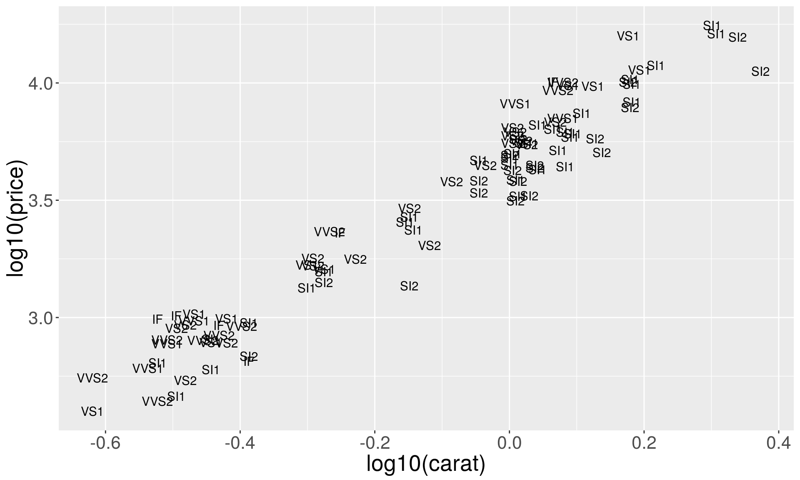
Text plots with rectangle plates
plog + geom_label(aes(label = clarity))

ggrepel package for annotation
ggrepel helps annotating overlapping labels.
# Uncomment the line below if you don't have 'ggrepel'
# install.packages("ggrepel")
library(ggrepel)
plog + geom_point() + geom_text_repel(aes(label = clarity), size = 3)
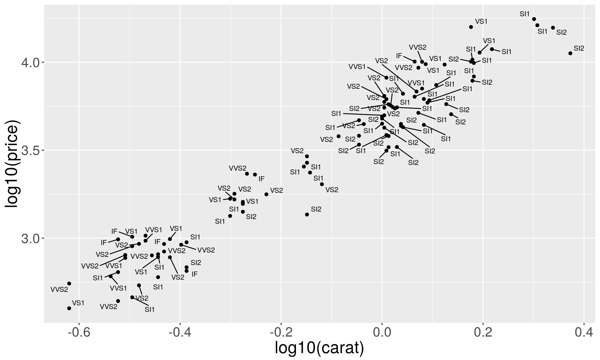
Aesthetic mapping vs variable scaling
aes() assign an aesthetic to a variable; it doesn’t determine how mapping should be done.
For example, aes(shape = x) or aes(color = z) do not specify what shapes or what colors should be used.
To choose colors/shapes/sizes etc. you need to modify the corresponding scale.
ggplot2 includes scales for:
- position
- color and fill
- size
- shape
- line type
Scales can be modified with functions of the form: scale_<aesthetic>_<type>(), e.g. scale_color_discrete().
Try typing scale_<tab>() to see a list of scale modification functions.
Common Scale Arguments:
- name: the first argument gives the axis or legend title
- limits: the minimum and maximum of the scale
- breaks: the points along the scale where labels should appear
- labels: the labels that appear at each break
Scales for the axes
# Square root y-axis transformation
p1 <- ggplot(dsmall, aes(x = carat, y = price))
psqrt <- p1 + geom_point() + scale_y_sqrt()
# Log base 10 y-axis transformation
plog10 <- p1 + geom_point() + scale_y_log10()
grid.arrange(psqrt, plog10, ncol = 2)
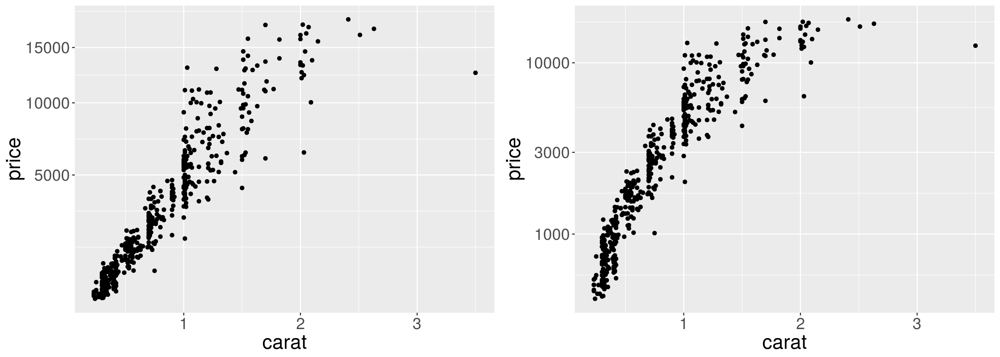
Log base 10 transformation of x and y axes. Note the differences.
ploglog1 <- p1 + geom_point() + scale_y_log10() + scale_x_log10()
ploglog2 <- ggplot(dsmall, aes(x = log(carat), y = log(price))) + geom_point()
grid.arrange(ploglog1, ploglog2, ncol = 2)
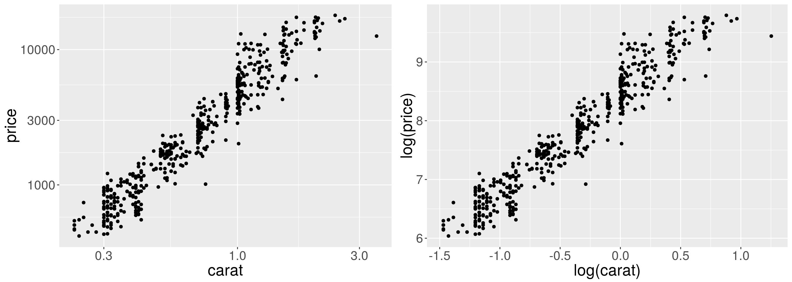
Scales for shapes
p11 <- p1 + geom_point(aes(shape = cut), size = 3)
p12 <- p1 + geom_point(aes(shape = cut), size = 3) +
scale_shape_manual(values = c(1:5))
grid.arrange(p11, p12, ncol = 2)
## Warning: Using shapes for an ordinal variable is not advised
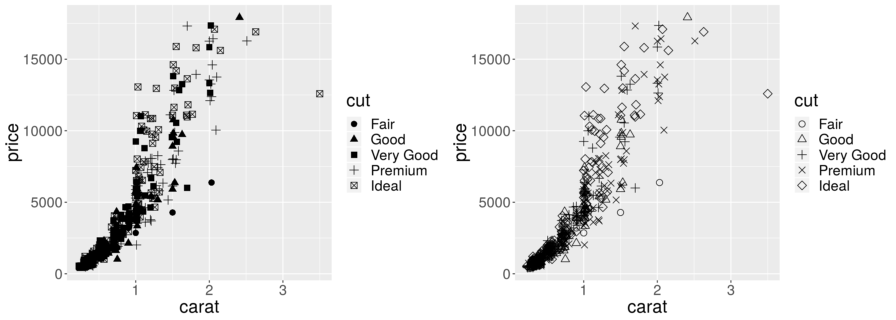
Scales for colors
To choose specific colors for discrete variables we use scale_color_manual.
p1 + geom_point(aes(color = cut), size = 3) +
scale_color_manual(values = c("red", "orange", "yellow", "green", "blue"))
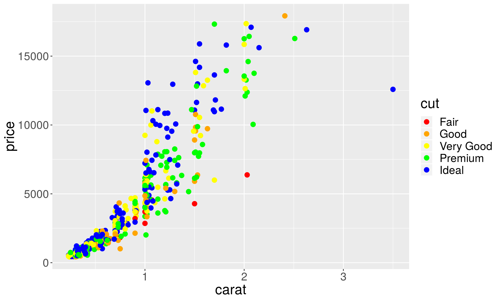
For continuous variables we use scale_color_gradient, and specify the ends of the color spectrum.
p1 + geom_point(aes(color = price), size = 3) +
scale_color_gradient(low = "blue", high = "red")
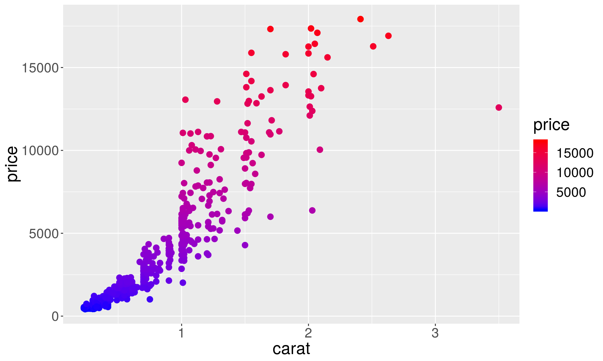
You can also scale the values of the variable corresponding to color.
p1 + geom_point(aes(color = price), size = 3) +
scale_color_gradient(low = "blue", high = "red", trans = "log10")
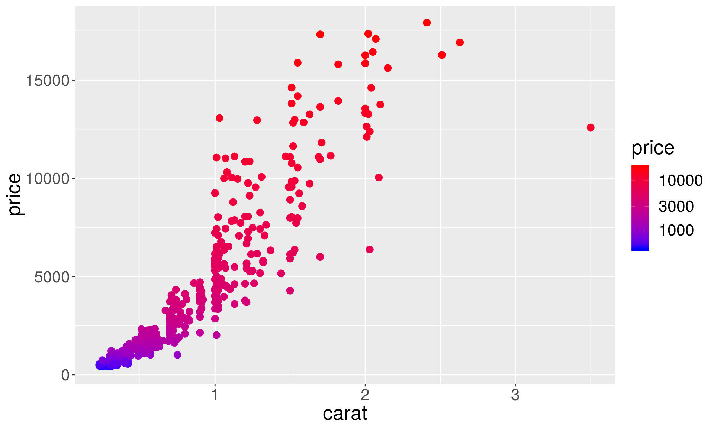
Or and add your own breaks
p1 + geom_point(aes(color = price), size = 3) +
scale_color_gradient(low = "blue", high = "red", trans = "log10",
breaks = c(1000, 2000, 5000, 10000),
labels = c(" 1000", " 2000", " 5000", "10000"))
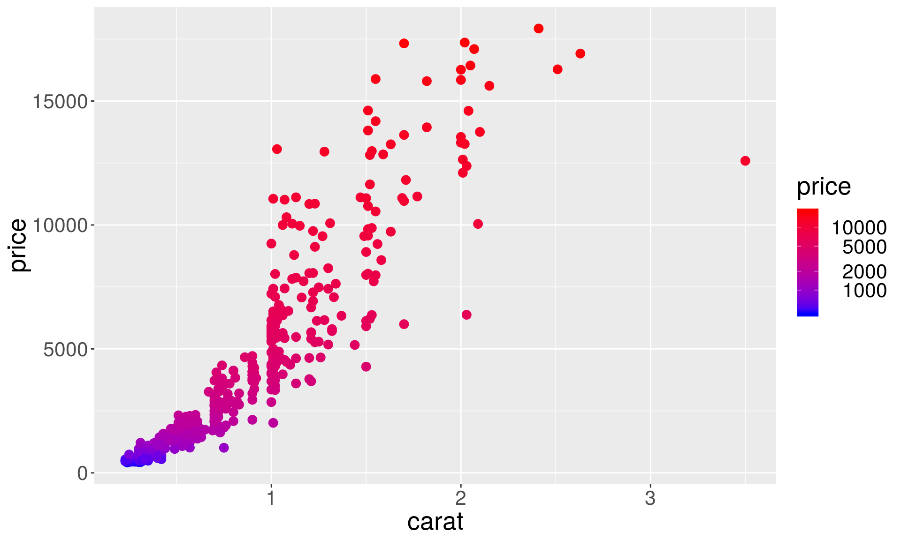
scale_color_brewer lets you choose nice color palettes for discrete variables.
p1 + geom_point(aes(color = cut), size = 3) +
scale_color_brewer(palette = "Set2")
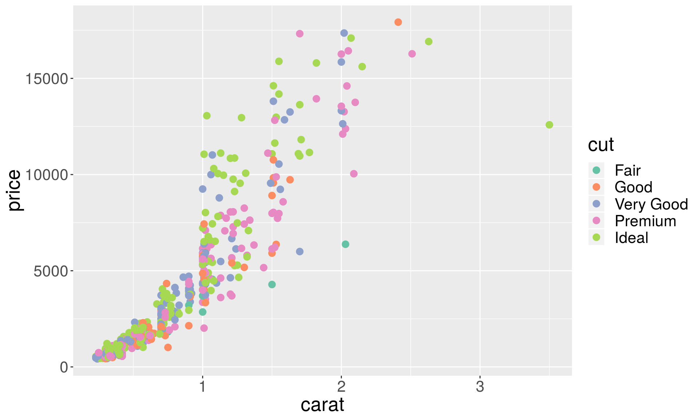
Unfortunately, scale_color_brewer doesn’t work for continuous variables:
# This will result in an error
p1 + geom_point(aes(shape = price), size = 3) +
scale_color_brewer(palette = "Spectral")
## Error: A continuous variable can not be mapped to shape

We can get around this issue using the RColorBrewer package and scale_color_gradientn function, which interpolates colors from the brewer palettes.
# install.packages("RColorBrewer")
library(RColorBrewer)
p1 + geom_point(aes(color = price), size = 3) +
scale_color_gradientn(colours = brewer.pal(name = "Spectral", n = 10))
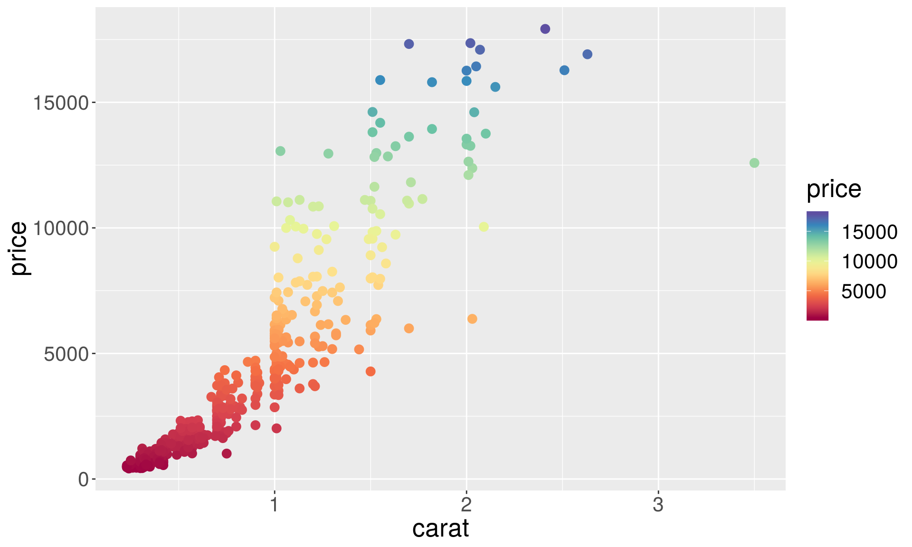
Another popular color scheme package, viridis, supports both discrete and continuous variables:
# install.packages("viridis")
library(viridis)
p1 + geom_point(aes(color = price), size = 3) + scale_color_viridis()
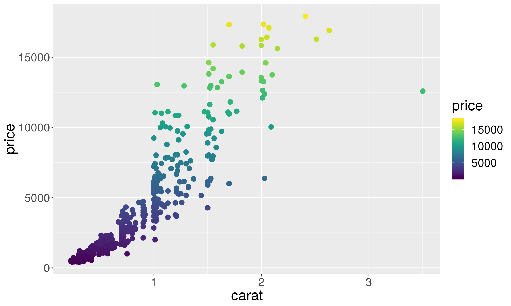
p1 + geom_point(aes(color = cut), size = 3) +
scale_color_viridis(discrete = TRUE, option = "magma")
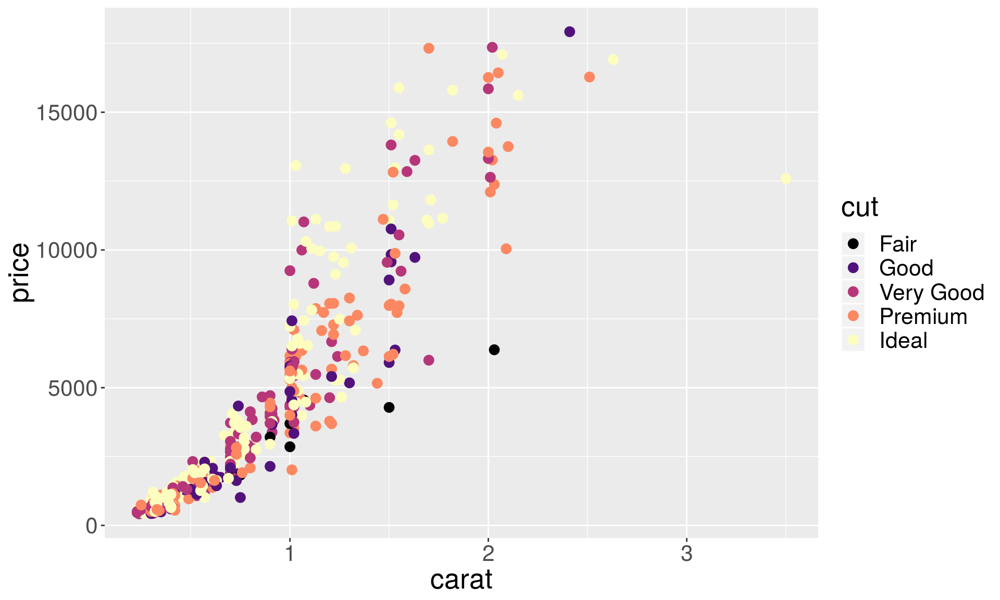
… there are also other unconventional schemes such as, one based on Wes Anderson movies :
#install.packages("wesanderson")
library(wesanderson)
names(wes_palettes)
## [1] "BottleRocket1" "BottleRocket2" "Rushmore1" "Rushmore"
## [5] "Royal1" "Royal2" "Zissou1" "Darjeeling1"
## [9] "Darjeeling2" "Chevalier1" "FantasticFox1" "Moonrise1"
## [13] "Moonrise2" "Moonrise3" "Cavalcanti1" "GrandBudapest1"
## [17] "GrandBudapest2" "IsleofDogs1" "IsleofDogs2"
Wes Anderson color palette:
# For discrete variables
p1 + geom_point(aes(color = cut), size = 3) +
scale_color_manual(values = wes_palette("Darjeeling1", n = 5))
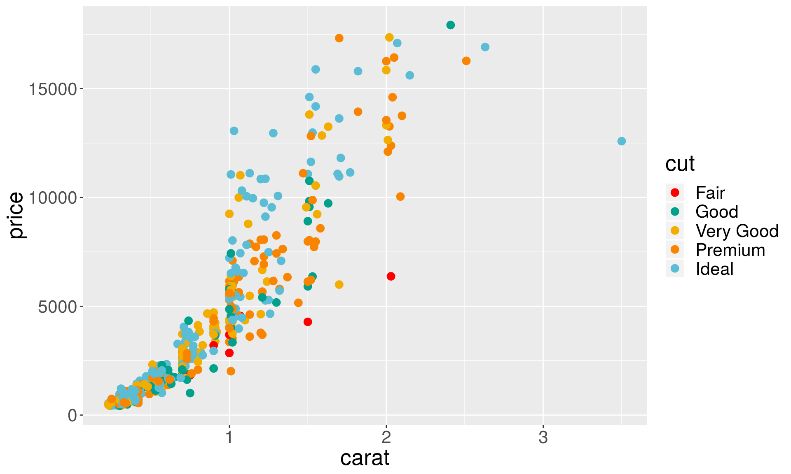
# For continuous variables:
p1 + geom_point(aes(color = price), size = 3) +
scale_color_gradientn(colours = wes_palette("Darjeeling1", 100, type = "continuous"))
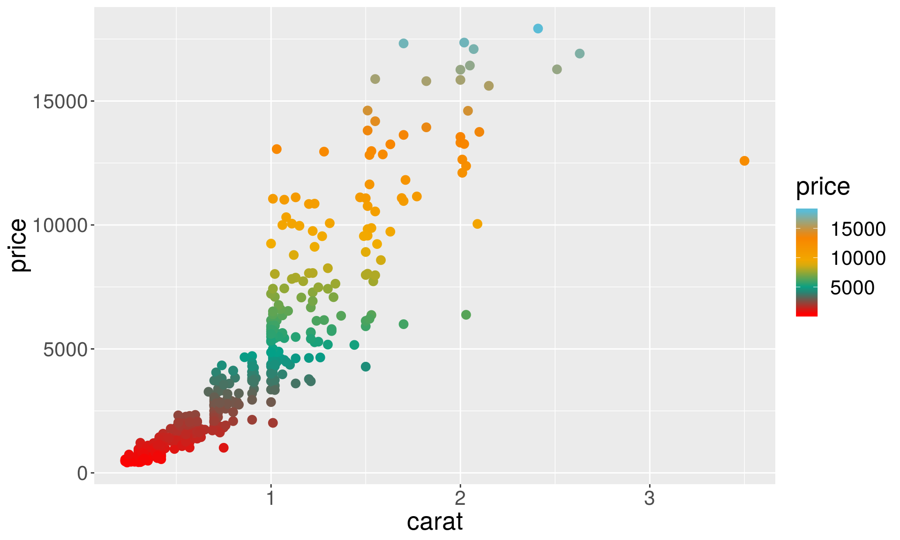
Histogram and density plots
# Distribution of the carats (weights) of the diamonds.
h <- ggplot(data = diamonds, aes(x = carat)) + geom_histogram()
d <- ggplot(data = diamonds, aes(x = carat)) + geom_density()
grid.arrange(h, d, ncol = 2)
## `stat_bin()` using `bins = 30`. Pick better value with `binwidth`.

Histogram parameters
In histograms, the smoothness is controlled with bins and binwidth arguments. (or by specifying using the breaks explicitly).
p <- ggplot(data = diamonds, aes(x = carat)) + xlim(0, 3)
h1 <- p + geom_histogram(binwidth = 0.5)
h2 <- p + geom_histogram(binwidth = 0.1)
h3 <- p + geom_histogram(binwidth = 0.05)
grid.arrange(h1, h2, h3, ncol = 3)

Density plot parameters
In density plots, the bw (the smoothing bandwidth) and adjust arguments control the smoothness.
d1 <- p + geom_density(adjust = 5)
d2 <- p + geom_density(adjust = 1)
d3 <- p + geom_density(adjust = 1/5)
grid.arrange(d1, d2, d3, ncol = 3)

Histograms for separate groups
# Here we show grouping by diamonds cut.
h <- p + geom_histogram(aes(fill = cut), position = "dodge", bins = 10)
d <- p + geom_density(aes(color = cut))
grid.arrange(h, d, ncol = 2)

Instead of marginal distributions, we can plot distribution of components stacked on top of each other to see the contribution from each of group.
h <- p + geom_histogram(aes(fill = cut), position = "stack")
d <- p + geom_density(aes(fill = cut), position = "stack")
grid.arrange(h, d, ncol = 2)
## `stat_bin()` using `bins = 30`. Pick better value with `binwidth`.

Position adjustments
Position adjustments are used to adjust the position of each geom. The following position adjustments are available:
position_identity: default of most geomsposition_jitter: adds a small amount of random variationposition_dodge: default of geom_boxplotposition_stack: default of geom_bar, geom_histogramposition_fill: useful for geom_bar, geom_histogram
The position parameter can be set as follows:
geom_point(..., position="jitter")
Position adjustments for scatterplots
Overplotting: many points overlap each other. Here variables are categorical, but sometimes rounding causes overplotting.
plt <- ggplot(diamonds, aes(x = cut, y = depth))
plt + geom_point()
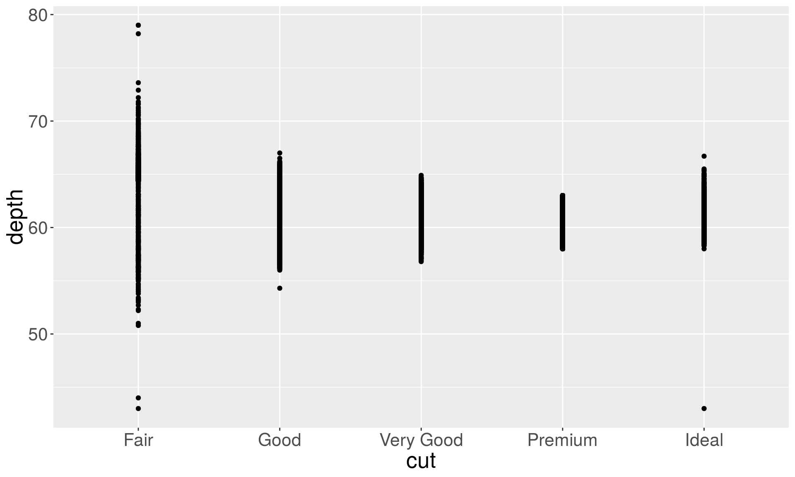
plt + geom_point(position = "jitter")
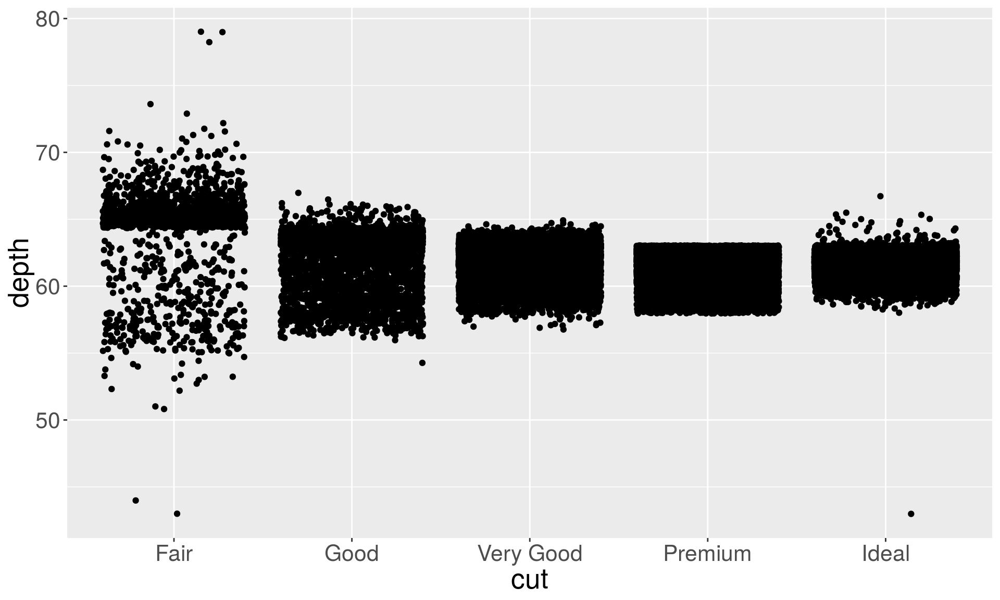
Bar charts
A discrete analogue of a histogram is the bar chart, geom_bar().
Instead of partitioning the values into bins like histograms, the bar geom counts the number of instances of each discrete class. The counts are then plotted as columns for each distinct class.
If you’d like include unequal weights for different observations, you can use the weight aesthetic.
b1 <- ggplot(diamonds, aes(x = clarity)) + geom_bar()
b2 <- ggplot(diamonds, aes(x = clarity)) + geom_bar(aes(weight = carat)) + ylab("carat")
grid.arrange(b1, b2, ncol = 2)

The left plot shows the number of diamonds in each clarity group, and the right plot shows the count weighted by carat, which is equivalent to showing the total weight of diamonds in clarity color group.
As you see, in ggplot2 (unlike base graphics) it is not necessary tabulate the values, i.e. compute the counts of each category beforehand. The computation is done automatically for you.
However, if you have already summarized data, you can still use geom_bar but you need to specify an identity transformation, stat = "identity rather than the default stat = "count".
diamond.counts <- diamonds %>%
group_by(color) %>%
summarise(count = n())
diamond.counts
## # A tibble: 7 x 2
## color count
## <ord> <int>
## 1 D 6775
## 2 E 9797
## 3 F 9542
## 4 G 11292
## 5 H 8304
## 6 I 5422
## 7 J 2808
With the frequency counts already computed, the default options of the barplot generates an error:
## # A tibble: 7 x 2
## color count
## <ord> <int>
## 1 D 6775
## 2 E 9797
## 3 F 9542
## 4 G 11292
## 5 H 8304
## 6 I 5422
## 7 J 2808
ggplot(diamond.counts, aes(x=color, y=count)) + geom_bar()
## Error: stat_count() must not be used with a y aesthetic.

# You need to do the following:
ggplot(diamond.counts, aes(x=color, y=count)) + geom_bar(stat="identity")
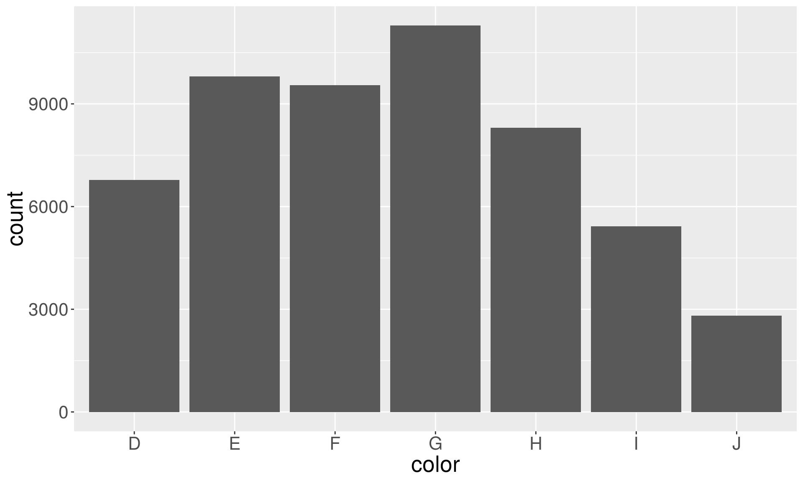
Smoothers and trend lines
# Smoothers help discern patterns in the data
set.seed(438756)
dsmall <- diamonds %>% sample_frac(0.1)
ggplot(dsmall, aes(x = carat, y = price)) +
geom_point(aes(color = color)) + geom_smooth()
## `geom_smooth()` using method = 'gam' and formula 'y ~ s(x, bs = "cs")'

Regression lines with ggplot2
ggplot(dsmall, aes(x = carat, y = price)) +
geom_point(aes(color = color)) + geom_smooth(method = "lm")

Saving plots
Now that you have your beautiful plot, you may want to save it as an image.
ggsave() is a convenient function for saving a plot.
By default, it saves the last plot that you displayed, using the size of the current graphics device. It also guesses the type of graphics device from the extension.
ggsave(filename, plot = last_plot(), device = NULL, path = NULL,
scale = 1, width = NA, height = NA, units = c("in", "cm", "mm"),
dpi = 300, limitsize = TRUE, ...)
“Device” can be either be a device function (e.g. png), or one of “eps”, “ps”, “tex” (pictex), “pdf”, “jpeg”, “tiff”, “png”, “bmp”, “svg” or “wmf” (windows only).